Uygulama MVC mimarisiyle geliştirilmiştir. Apache 2.4 (frontend servisi, -D MVC modu)
yalnızca statik dosyaları (/css/, /img/, /js/, /hata/) sunar; diğer tüm HTTP
isteklerini uygulama:8000 adresindeki Node.js/Express uygulamasına ters vekil (reverse proxy) olarak iletir.
Uygulama içerisinde katman ayrımı sıkı biçimde korunmuştur:
uygulama/src/routes/index.js): URL eşlemeleri ve yetkilendirme ara yazılımları (girisGerekli, yoneticiGerekli).uygulama/src/controllers/): İstek/yanıt akışı ve yönlendirmeler. Hiçbir controller içinde SQL sorgusu yoktur.uygulama/src/repositories/): Parametreli SQL sorguları, hazır view'lar, stored procedure çağrıları ve Redis işlemleri.uygulama/src/views/): EJS şablonları ile HTML5 + CSS3 üretim (kaçışlı çıktı, iş kuralı/tarih karşılaştırması içermez).| Servis | Teknoloji | Görev ve Okuma/Yazma Rolü |
|---|---|---|
frontend | Apache 2.4 (-D MVC) | Statik varlıklar + 8080 portundan uygulamaya ters vekil |
uygulama | Node.js 22 + Express + EJS | MVC uygulaması (8000 portu), ortam değişkenlerinden DB/Redis yapılandırması |
mysql-primary | MySQL 8.4 | Yazma sunucusu (INSERT/UPDATE/DELETE, CALL sp_*, işlem sonrası bakiye) |
mysql-replica | MySQL 8.4 (read-only) | Okuma sunucusu (listelemeler, raporlar, v_menu_* view'ları) |
replica-setup | MySQL 8.4 | İlk açılışta replikasyonu kurar ve Exited (0) ile sonlanır |
redis | Redis 7.4 (AOF) | Sabit menü önbelleği (menu:*) ve 30 dk kayan süreli oturum deposu (oturum:*) |
rapor/asama-1-dogrulama.sh betiği ile tüm servislerin sağlıklı ayağa kalktığı, kaynakta yapılan bakiye
yüklemesinin replikaya aktığı, replikaya yazma denemesinin ERROR 1290 (read-only) ile reddedildiği,
replika durdurulup başlatıldığında aradaki işlemleri yakaladığı ve Redis'in yanıt verdiği doğrulanmıştır:
=== 1. Servislerin durumu ===
$ docker compose ps -a
NAME IMAGE COMMAND SERVICE CREATED STATUS PORTS
yemekhane-frontend-1 yemekhane-frontend "httpd-foreground -D…" frontend 33 minutes ago Up 33 minutes (healthy) 0.0.0.0:8080->80/tcp, [::]:8080->80/tcp
yemekhane-mysql-primary-1 mysql:8.4 "docker-entrypoint.s…" mysql-primary 33 minutes ago Up 33 minutes (healthy) 33060/tcp, 0.0.0.0:3307->3306/tcp, [::]:3307->3306/tcp
yemekhane-mysql-replica-1 mysql:8.4 "docker-entrypoint.s…" mysql-replica 33 minutes ago Up 6 minutes (healthy) 33060/tcp, 0.0.0.0:3308->3306/tcp, [::]:3308->3306/tcp
yemekhane-redis-1 redis:7.4-alpine "docker-entrypoint.s…" redis 33 minutes ago Up 33 minutes (healthy) 0.0.0.0:6379->6379/tcp, [::]:6379->6379/tcp
yemekhane-replica-setup-1 mysql:8.4 "bash /replica-setup…" replica-setup 33 minutes ago Exited (0) 33 minutes ago
=== 2. Replikasyon durumu ===
$ SHOW REPLICA STATUS (özet)
Source_Host: mysql-primary
Replica_IO_Running: Yes
Replica_SQL_Running: Yes
Last_Error:
Replica_SQL_Running_State: Replica has read all relay log; waiting for more updates
=== 3. Kaynakta yüklenen bakiye replikada görünüyor ===
$ docker compose exec mysql-replica mysql -uyemekhane_app -pUyg_2026 yemekhane -e SELECT id, bakiye FROM kullanicilar WHERE id = 7
id bakiye
7 755.00
$ docker compose exec mysql-primary mysql -uyemekhane_app -pUyg_2026 yemekhane -e CALL sp_bakiye_yukle(7, 100)
hareket_id bakiye
458 855.00
$ docker compose exec mysql-replica mysql -uyemekhane_app -pUyg_2026 yemekhane -e SELECT id, bakiye FROM kullanicilar WHERE id = 7
id bakiye
7 855.00
=== 4. Replikaya yazma denemesi reddedilir ===
$ docker compose exec mysql-replica mysql -uyemekhane_app -pUyg_2026 yemekhane -e CALL sp_bakiye_yukle(7, 50)
ERROR 1290 (HY000) at line 1: The MySQL server is running with the --super-read-only option so it cannot execute this statement
=== 5. Replika durdurulup başlatılınca değişiklikleri yakalar ===
$ docker compose stop mysql-replica
Container yemekhane-mysql-replica-1 Stopping
Container yemekhane-mysql-replica-1 Stopped
$ docker compose exec mysql-primary mysql -uyemekhane_app -pUyg_2026 yemekhane -e CALL sp_bakiye_yukle(7, 200)
hareket_id bakiye
459 1055.00
$ docker compose start mysql-replica
Container yemekhane-mysql-replica-1 Starting
Container yemekhane-mysql-replica-1 Started
(replikanın hazır olması için 40 sn bekleniyor)
$ docker compose exec mysql-replica mysql -uyemekhane_app -pUyg_2026 yemekhane -e SELECT id, bakiye FROM kullanicilar WHERE id = 7
id bakiye
7 1055.00
=== 6. Redis ===
$ docker compose exec redis redis-cli ping
PONG
Örnek İstek: POST /rezervasyon/yap (öğrencinin menü rezervasyonu yapması)
middlewares/authMiddleware.js): oturumYukle çerezdeki token ile Redis'ten (oturum:{token}) kullanıcıyı yükler ve 30 dk TTL'i yeniler; girisGerekli oturum yoksa /giris'e yönlendirir.routes/index.js): router.post('/rezervasyon/yap', girisGerekli, rezervasyonController.rezervasyonYap) isteği denetleyiciye iletir.controllers/rezervasyonController.js): menu_id, yarim_porsiyon ve güvenli donus_url doğrulamasını yapar (open redirect koruması); doğrudan SQL çalıştırmadan rezervasyonRepository.rezervasyonYap(...) çağırır.repositories/rezervasyonRepository.js): Kaynak sunucu havuzu (yazma) üzerinden CALL sp_rezervasyon_yap(?, ?, ?) yordamını çağırır. Hata varsa utils/hataYardimcisi.js yalnızca SQLSTATE 45000 (kod 1644) Türkçe mesajını döndürür, sistem/SQL hatalarını gizler.kullaniciRepository.bakiyeGetirKaynaktan(kullaniciId) ile güncel bakiye doğrudan mysql-primary'den okunur ve oturumRepository.oturumGuncelle ile Redis'teki oturuma yazılır.302 Redirect döner; ilgili ekran (views/menu/gunun.ejs veya haftalik.ejs) güncellenmiş bakiye ve durumu HTML olarak sunar.
MySQL kaynak-replika (source-replica) replikasyonu eşzamansız (asynchronous) çalışır:
sp_rezervasyon_yap veya sp_rezervasyon_iptal yordamı mysql-primary üzerinde
işlemi COMMIT ettiği anda yanıt uygulamaya döner, ancak binlog olayının ağ üzerinden mysql-replica'ya
ulaşıp SQL iş parçacığı tarafından uygulanması milisaniyeler (yük altında daha uzun) sürebilir. Rezervasyondan hemen sonra
kullanıcıya gösterilen bakiye replikadan okunsaydı, kullanıcı parasının henüz düşmediğini (bayat bakiye) görebilir ve
tutarsız bir deneyim yaşayabilirdi. Bu "read-your-own-writes" tutarlılığını sağlamak için rezervasyon, iptal ve
bakiye yükleme sonrasında bakiye her zaman kullaniciRepository.bakiyeGetirKaynaktan aracılığıyla doğrudan
kaynak sunucudan (yazma havuzu) okunmakta ve Redis oturumu bu taze değerle güncellenmektedir. Benzer şekilde
alerjen tercihi kaydedildikten hemen sonra profil sayfası da tercihleri kaynaktan okuyarak gecikme riskini ortadan kaldırır.
<%= ... %> ile kaçışlıdır (XSS yok).(rezervasyon_son <= NOW()) ile yapılır.utils/hataYardimcisi.js yalnızca stored procedure'ün SQLSTATE 45000 mesajlarını kullanıcıya iletir; ham SQL ve CHECK (3819) hataları yalnızca sunucu günlüğüne yazılır./cikis yalnızca POST kabul eder; donus_url site içi yollara kısıtlıdır; /turnike/gecis yalnızca yonetici rolüne açıktır ve sunucu zamanını kullanır; pasif hesaplarda tek tip giriş hatası döner.
Aşağıdaki tüm ekranlar Puppeteer/Headless Chrome ile hem 1280px masaüstü hem 400px telefon genişliğinde otomatik
doğrulanmış; tüm ekranlarda yatay taşma 0 px (scrollWidth = 400px) olarak ölçülmüştür.
E-posta ve şifre ile bcrypt doğrulamalı giriş ekranı.
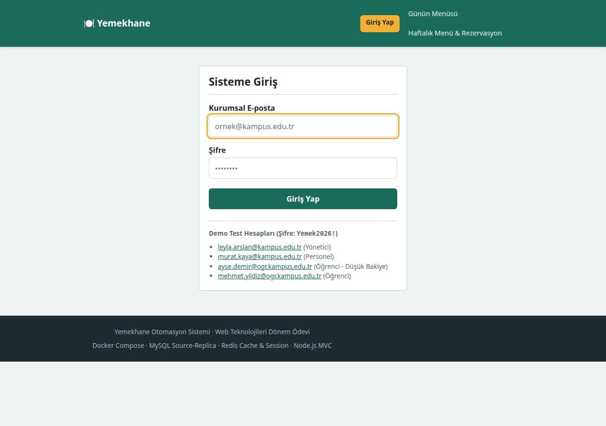
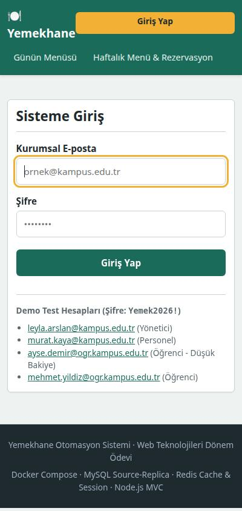
Yemekhane/tarih/öğün seçimi, toplam kalori, vejetaryen/alerjen rozetleri, Aşama 4 yarım porsiyon ve kişisel alerjen uyarısı.
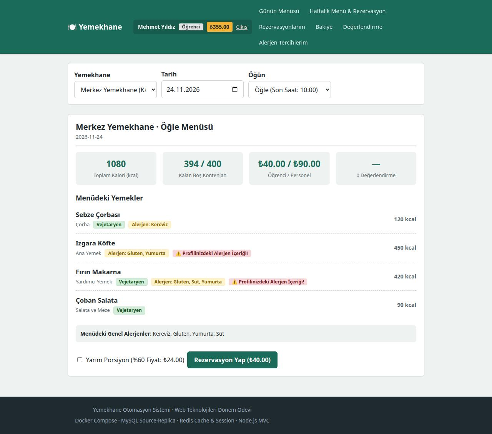
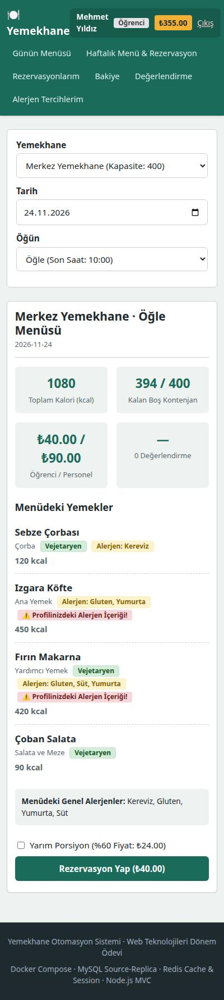
Boş kontenjan, role göre fiyat, süresi dolan öğünlerde pasif düğme ve yarım porsiyon seçeneği.
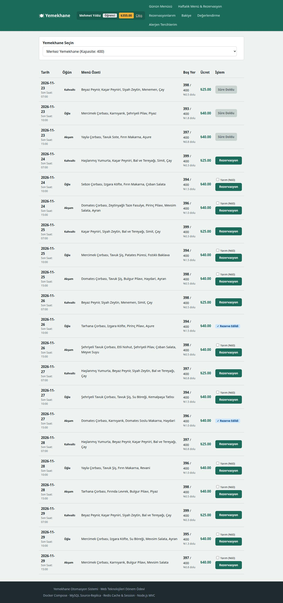
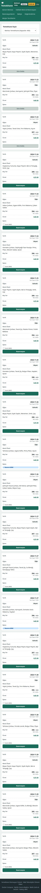
Aktif, kullanıldı ve iptal durumları; tam/yarım porsiyon bilgisi ve süresi dolmamış aktif kayıtlar için iptal.
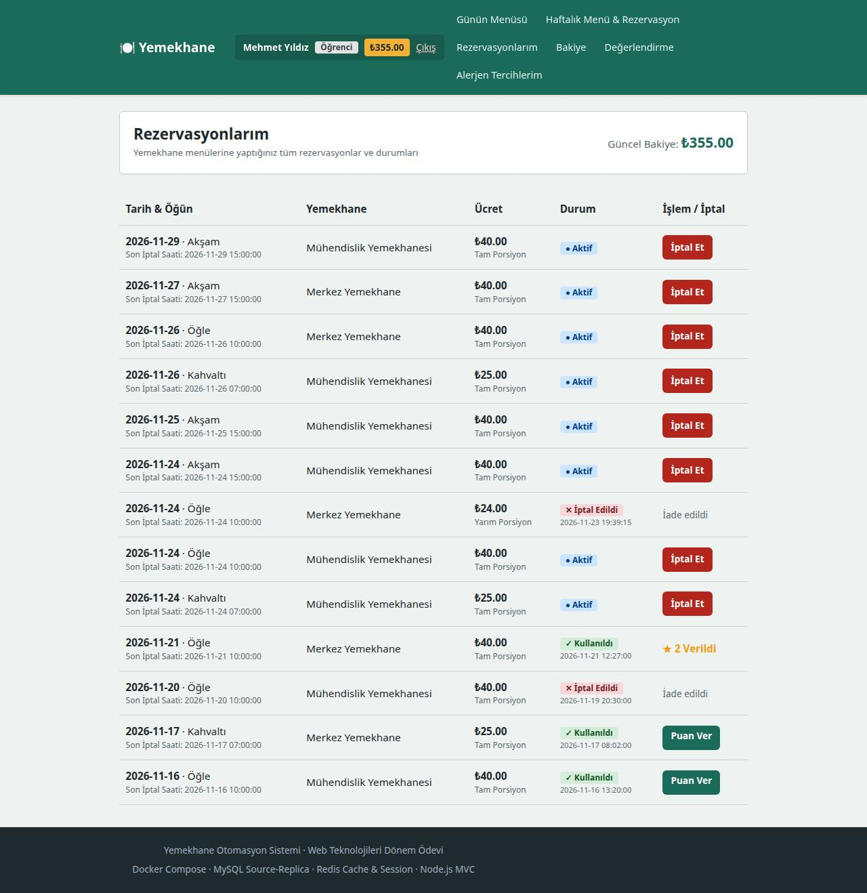
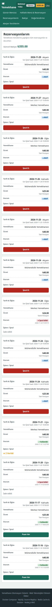
Kaynaktan okunan güncel bakiye, sp_bakiye_yukle ile 10–1000 TL yükleme ve replikadan okunan hareket geçmişi.
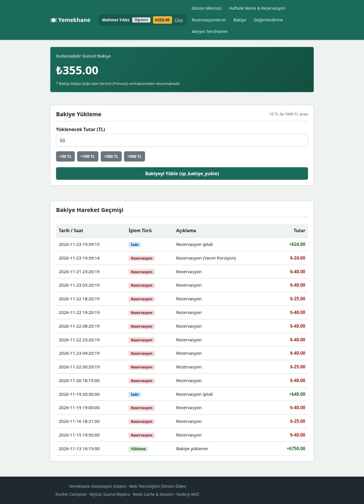
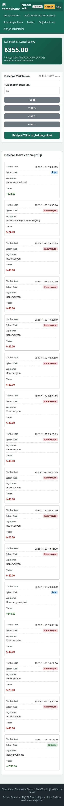
Yalnızca kullanılmış (turnikeden geçilmiş) menüler için 1–5 puan ve yorum formu.
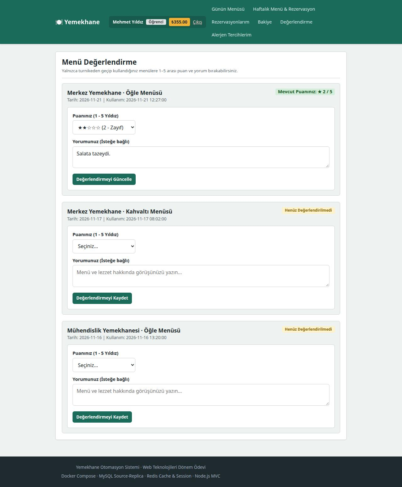
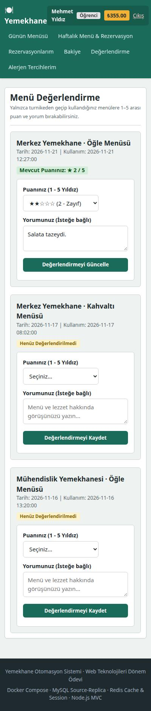
v_menu_doluluk ve v_menu_puan raporları, yeni menü oluşturma, düzenleme ve silme işlemleri.
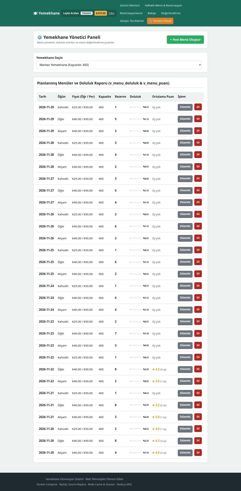
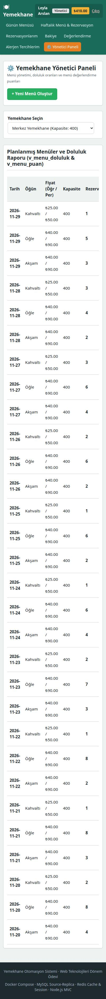
Yönetici bir menüyü güncellediğinde hem veritabanı hem de eski/yeni Redis önbellek anahtarı temizlenir.
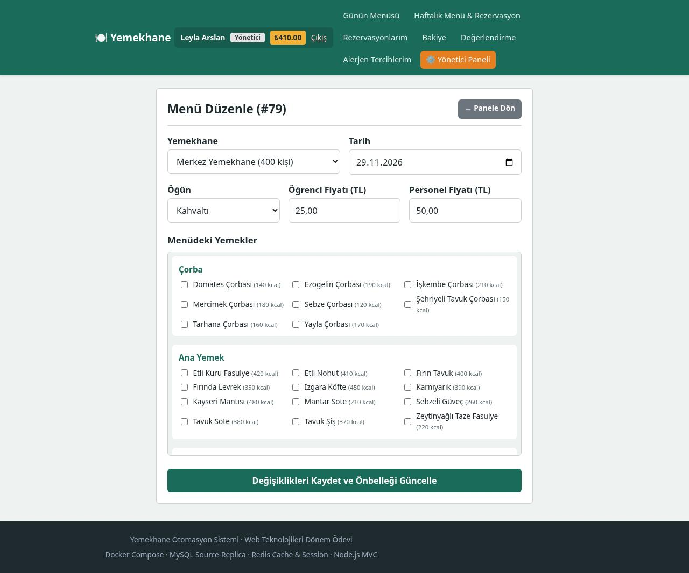
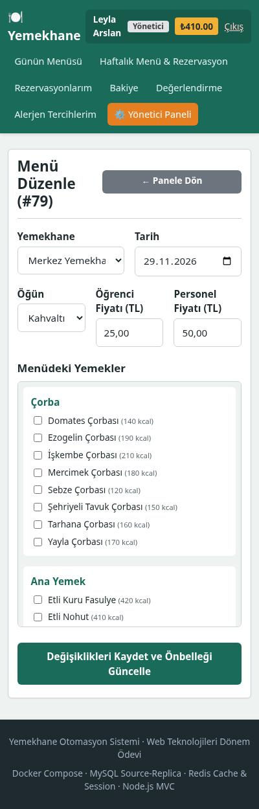
ayse.demir@ogr.kampus.edu.tr (12,50 TL) ile pahalı menü rezervasyonunda SQLSTATE 45000 mesajının doğrudan arayüze iletilmesi.
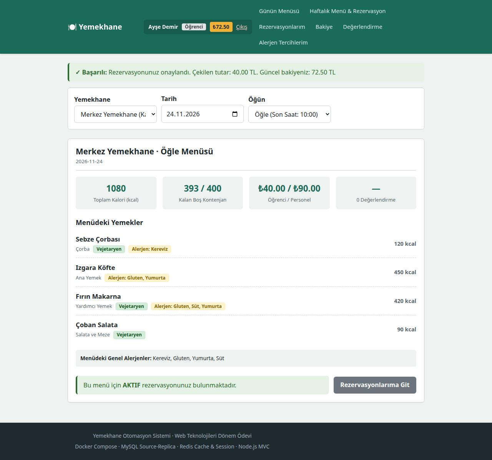
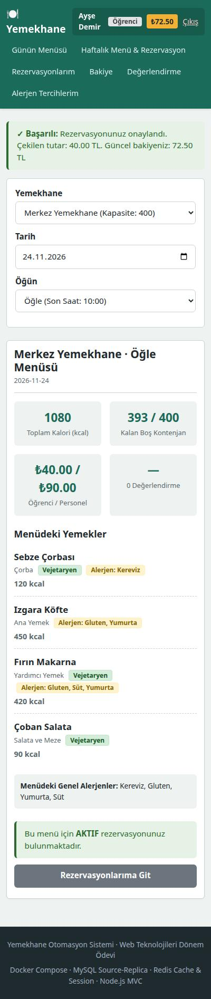
Redis iki görev için kullanılmaktadır: (1) Sabit menü verisi (yemek listesi, kalori, alerjen, fiyatlar)
menu:{yemekhane_id}:{tarih}:{ogun_id} anahtarıyla gün sonuna kadar önbelleğe alınır; her rezervasyonda
değişen bos_yer, doluluk_yuzde ve ortalama_puan alanları önbelleğe yazılmaz,
her istekte replikadan taze okunur. (2) Kullanıcı oturumları oturum:{token} anahtarıyla 30 dakika (1800 sn)
süreyle saklanır, her istekte yenilenir, uygulama konteyneri yeniden başlasa da korunur ve POST /cikis ile silinir.
Doğrulama Betiği ve Gerçek Çıktılar (rapor/asama-3-dogrulama.sh):
=== 1. Redis Bağlantı Kontrolü ===
$ docker compose exec -T redis redis-cli PING
PONG
=== 2. Menü Önbelleği: İlk İstek (Cache MISS -> DB Okuma -> Redis Kayıt) ===
$ curl -s -o /dev/null -w '%{http_code}' 'http://localhost:8080/menu/gunun?yemekhane_id=1&tarih=2026-11-23&ogun_id=2'
HTTP Durum: 200
$ docker compose logs --since='2026-11-23T10:51:53+02:00' uygulama
[DB OKUMA] menu:1:2026-11-23:2 replikadan çekiliyor...
[REDIS KAYIT] menu:1:2026-11-23:2 TTL: 43685 sn
=== 3. Redis Anahtar, TTL ve Sabit Veri Doğrulaması (bos_yer/ortalama_puan önbellekte yok) ===
$ docker compose exec -T redis redis-cli KEYS 'menu:*'
menu:1:2026-11-23:2
$ docker compose exec -T redis redis-cli TTL 'menu:1:2026-11-23:2'
43684
$ Redis değerinde dinamik alan (bos_yer / ortalama_puan) kontrolü:
{"id":44,"yemekhane_id":1,"yemekhane":"Merkez Yemekhane","tarih":"2026-11-23","ogun_id":2,"ogun":"Öğle","rezervasyon_son":"2026-11-23 10:00:00","ogrenci_fiyati":40,"personel_fiyati":90,"toplamKalori":1110,"vejetaryen":false,"alerjenler":["Kereviz","Gluten","...
OK: Yalnızca sabit menü verisi önbellekte (doluluk ve puan her istekte replikadan taze okunur).
=== 4. Menü Önbelleği: İkinci İstek (Cache HIT -> DB'ye Gitmeden Redis'ten Okuma) ===
HTTP Durum: 200
$ docker compose logs --since='2026-11-23T10:51:54+02:00' uygulama
[REDIS ÖNBELLEK HIT] menu:1:2026-11-23:2
=== 5. Yönetici Menüyü Güncelleyince Eski Önbelleğin Silinmesi ve Arayüzde Yeni Menünün Görünmesi ===
Güncelleme öncesi öğrenci fiyatı (arayüz): ₺40.00 / ₺90.00
$ POST /yonetici/menu/44/duzenle (öğrenci fiyatı 40.00 -> 42.00 TL)
HTTP Durum: 302
$ docker compose logs --since='2026-11-23T10:51:56+02:00' uygulama
[REDIS ÖNBELLEK HIT] menu:1:2026-11-23:2
[REDIS ÖNBELLEK SİLİNDİ] menu:1:2026-11-23:2
$ docker compose exec -T redis redis-cli EXISTS 'menu:1:2026-11-23:2' (0 beklenir)
0
$ Güncelleme sonrası arayüz isteği (GET /menu/gunun -> yeni fiyat görünmeli ve Redis'e yeniden yazılmalı):
Güncelleme sonrası öğrenci/personel fiyatı (arayüz): ₺42.00 / ₺90.00
[DB OKUMA] menu:1:2026-11-23:2 replikadan çekiliyor...
[REDIS KAYIT] menu:1:2026-11-23:2 TTL: 43681 sn
(Örnek veri tutarlılığı için fiyat tekrar 40.00 TL yapıldı.)
=== 6. Redis Oturum Yönetimi: Giriş, 30 dk TTL, Sliding Expiration ve Çıkış ===
Oluşan oturum anahtarı: oturum:d7c4c11d-39e4-4... (kısaltıldı)
$ docker compose exec -T redis redis-cli TTL 'oturum:<token>' (giriş anı, ~1800 sn)
1800
(4 saniye bekleniyor...)
Bekleme sonrası TTL: 1796
$ Yeni istek: GET /bakiye (her istekte TTL yenilenmeli)
İstek sonrası yenilenen TTL: 1800
=== 7. Uygulama Container'ı Yeniden Başlasa Da Oturum Düşmüyor ===
$ docker compose restart uygulama
$ Restart sonrası aynı çerezle GET /bakiye (200 OK ve kullanıcı adı beklenir)
HTTP Durum: 200 (oturum korunuyor, sayfada kullanıcı eşleşmesi: 1)
$ docker compose exec -T redis redis-cli EXISTS 'oturum:<token>' (1 beklenir)
1
$ POST /cikis (oturum anahtarı Redis'ten silinmeli)
$ docker compose exec -T redis redis-cli EXISTS 'oturum:<token>' (0 beklenir)
0
=== Aşama 3 Doğrulaması Başarıyla Tamamlandı ===
Değişiklik talebi tek bir idempotent migration dosyasında (db/init/04_degisiklik.sql) toplanmıştır.
Dosya db/init/ klasöründe olduğu için depoyu sıfırdan docker compose up -d ile kuran herkes
değişikliği otomatik alır; çalışan sistemde ise yalnızca mysql-primary üzerine uygulanır ve replikasyonla
mysql-replica'ya geçer.
rezervasyonlar tablosuna porsiyon ENUM('tam','yarim') NOT NULL DEFAULT 'tam' sütunu eklenir; mevcut kayıtlar otomatik olarak 'tam' kalır.kullanici_alerjenleri (kullanici_id, alerjen_id) tablosu oluşturulur.sp_rezervasyon_yap(p_kullanici_id, p_menu_id, p_yarim_porsiyon) güncellenir: öğle/akşam yarım porsiyonda fiyat %60 olarak hesaplanır; kahvaltıda yarım porsiyon SQLSTATE 45000 ("Kahvaltıda yarım porsiyon seçilemez.") ile engellenir.menu:* anahtarları redis-cli --scan --pattern 'menu:*' | xargs -r redis-cli DEL ile temizlenir.Doğrulama Betiği ve Gerçek Çıktılar (rapor/asama-4-dogrulama.sh):
=== 1. Çalışan Sistemde Migration Uygulaması ve Binlog Replikasyonu ===
$ Migration öncesi replika binlog konumu (mysql-replica):
Source_Log_File: mysql-bin.000004
Read_Source_Log_Pos: 8765
Relay_Source_Log_File: mysql-bin.000004
Replica_IO_Running: Yes
Replica_SQL_Running: Yes
Exec_Source_Log_Pos: 8765
$ Çalışan mysql-primary üzerine db/init/04_degisiklik.sql uygulanıyor (idempotent migration):
1
1
$ Migration sonrası replika binlog konumu (Exec_Source_Log_Pos ilerlemiş olmalı):
Source_Log_File: mysql-bin.000004
Read_Source_Log_Pos: 14180
Relay_Source_Log_File: mysql-bin.000004
Replica_IO_Running: Yes
Replica_SQL_Running: Yes
Exec_Source_Log_Pos: 14180
=== 2. Replika Şema Doğrulaması (SHOW CREATE TABLE — mysql-replica) ===
$ SHOW CREATE TABLE rezervasyonlar\G (mysql-replica)
*************************** 1. row ***************************
Table: rezervasyonlar
Create Table: CREATE TABLE `rezervasyonlar` (
`id` int unsigned NOT NULL AUTO_INCREMENT,
`kullanici_id` int unsigned NOT NULL,
`menu_id` int unsigned NOT NULL,
`durum` enum('aktif','kullanildi','iptal') CHARACTER SET utf8mb4 COLLATE utf8mb4_tr_0900_ai_ci NOT NULL DEFAULT 'aktif',
`porsiyon` enum('tam','yarim') CHARACTER SET utf8mb4 COLLATE utf8mb4_tr_0900_ai_ci NOT NULL DEFAULT 'tam',
`ucret` decimal(8,2) NOT NULL,
`olusturma` datetime NOT NULL DEFAULT CURRENT_TIMESTAMP,
`kullanma_zamani` datetime DEFAULT NULL,
`iptal_zamani` datetime DEFAULT NULL,
PRIMARY KEY (`id`),
UNIQUE KEY `uq_rezervasyon` (`kullanici_id`,`menu_id`),
KEY `ix_rezervasyon_menu_durum` (`menu_id`,`durum`),
CONSTRAINT `fk_rez_kullanici` FOREIGN KEY (`kullanici_id`) REFERENCES `kullanicilar` (`id`),
CONSTRAINT `fk_rez_menu` FOREIGN KEY (`menu_id`) REFERENCES `menuler` (`id`)
) ENGINE=InnoDB AUTO_INCREMENT=370 DEFAULT CHARSET=utf8mb4 COLLATE=utf8mb4_tr_0900_ai_ci
$ SHOW CREATE TABLE kullanici_alerjenleri\G (mysql-replica)
*************************** 1. row ***************************
Table: kullanici_alerjenleri
Create Table: CREATE TABLE `kullanici_alerjenleri` (
`kullanici_id` int unsigned NOT NULL,
`alerjen_id` tinyint unsigned NOT NULL,
`olusturma` datetime NOT NULL DEFAULT CURRENT_TIMESTAMP,
PRIMARY KEY (`kullanici_id`,`alerjen_id`),
KEY `fk_ka_alerjen` (`alerjen_id`),
CONSTRAINT `fk_ka_alerjen` FOREIGN KEY (`alerjen_id`) REFERENCES `alerjenler` (`id`) ON DELETE CASCADE,
CONSTRAINT `fk_ka_kullanici` FOREIGN KEY (`kullanici_id`) REFERENCES `kullanicilar` (`id`) ON DELETE CASCADE
) ENGINE=InnoDB DEFAULT CHARSET=utf8mb4 COLLATE=utf8mb4_tr_0900_ai_ci
$ Mevcut rezervasyonların porsiyon dağılımı (test öncesi — hepsi 'tam' kalmış olmalı)
porsiyon adet
tam 368
=== 3. Yarım Porsiyon (%60 Fiyat) Rezervasyon Canlı Testi ===
Seçilen Öğle Menüsü: id=50, tarih=2026-11-24, tam öğrenci fiyatı=40.00 TL (beklenen %60: 24.00 TL)
Yönlendirme (decode): Location: /menu/haftalik?mesaj=Rezervasyonunuz onaylandı. Çekilen tutar: 24.00 TL. Güncel bakiyeniz: 331.00 TL
$ Replikadan yeni yarım porsiyon rezervasyon kaydı:
id menu_id durum porsiyon ucret
370 50 aktif yarim 24.00
(Test rezervasyonu #370 temizlik amaçlı iptal edildi ve ücret iade edildi.)
=== 4. Kahvaltıda Yarım Porsiyon Engeli (SQLSTATE 45000) ===
Seçilen Kahvaltı Menüsü: id=49, tarih=2026-11-24
Yönlendirme (decode): Location: /menu/haftalik?hata=Kahvaltıda yarım porsiyon seçilemez.
=== 5. Alerjen Tercihleri Kaydı ve Menüde Kişisel Uyarı Doğrulaması ===
$ Replikadan kullanıcı alerjen tercihleri:
kullanici_id alerjen
7 Gluten
7 Kabuklu deniz ürünleri
Günün menüsü sayfasında tespit edilen kişisel alerjen uyarısı sayısı: 2
=== 6. Migration Sonrası Redis'teki Eski Menü Önbellek Kayıtlarının Temizlenmesi ===
$ Temizlik öncesi menu:* anahtarları:
menu:1:2026-11-23:3
menu:1:2026-11-24:2
menu:1:2026-11-23:2
$ docker compose exec -T redis sh -c "redis-cli --scan --pattern 'menu:*' | xargs -r redis-cli DEL"
3
$ Temizlik sonrası menu:* anahtarları (boş beklenir):
=== Aşama 4 Doğrulaması Başarıyla Tamamlandı ===
Kullanıcının seçtiği alerjenler kullanici_alerjenleri tablosuna kaydedilir ve Günün Menüsü ekranında kırmızı uyarı rozetiyle gösterilir.
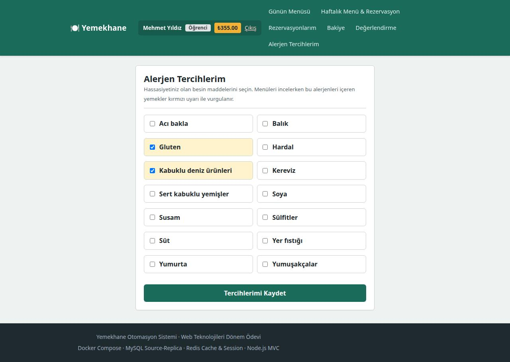
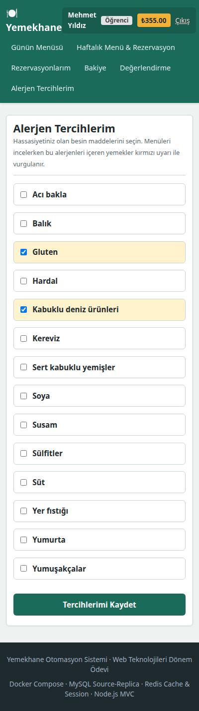